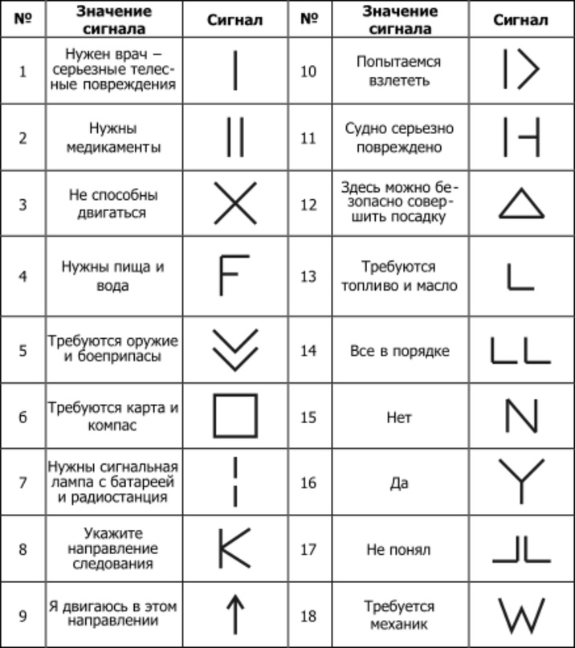

Международные символы "Земля-Воздух"
Сигналы могут быть выложены из веток, досок, камней или других подручных средств.
Предназначены для обозначения бедствия и указания точного местоположения для последующей эвакуации и оказания неотложной помощи.
